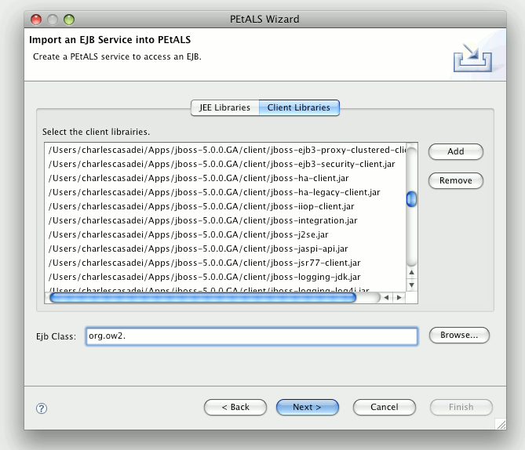
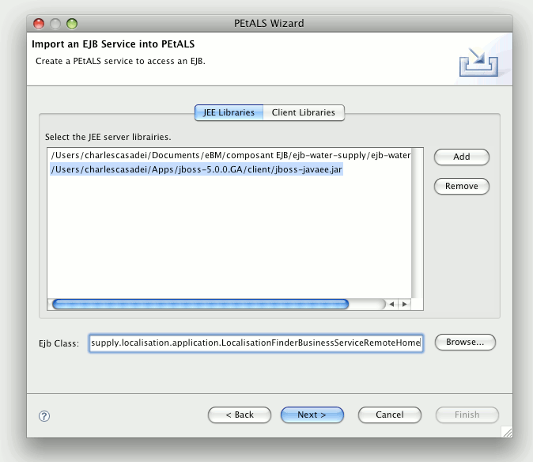
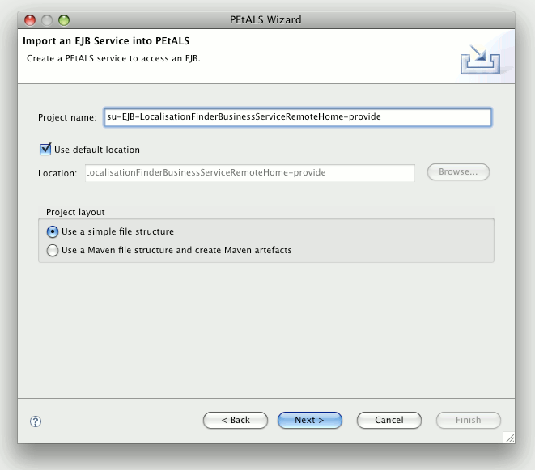

The EJB plug-in allows you to create a project which contains everything you need to expose it into PEtLS. The project will embed the JEE and client libraries, the JBI descriptor for Petals and a WSDL file matching the exposed EJB.
The WSDL is generated on the fly from the information provided in the wizard.
Its elements are coherent with both the EJB class ands the JBI descriptor that is
generated just before.
There are slight differences between the usual wizard, as exposed in the Petals plug-ins overview, and the Petals EJB plug-in. This page shows these differences and will guide users to expose their EJBs into Petals using this tooling.
To run the EJB wizard, select File > New > Other... and then select Use EJB in the Petals category.
The first page deals with the libraries your EJB is related to.
Specify the location of the server libraries in the JEE Libraries tab.
Then, specify the Client Libraries in the dedicated tab.
Eventually, complete the page by selecting the EJB class. Provide the beginning of the class name and then select Browse... to select your class among the given proposals.

When you have provided all the information, you are can move on the next page by clicking Next. The page should look like as below.

The next page expects specific information for Petals.
It should be pre-filled from the previous page. The interface parts are disabled.
The service namespace can't be modified, it matches the one that will be generated in the WSDL.
You can modify the service name and the end-point name. The generated WSDL will be coherent with these values.
Once it is done, click Next.
As usual, the wizard has a page where you have to specify the project name and the project structure (a Maven one or a simple one).

Once this is done, click Next.
The next page contains information which are specific to the Petals EJB component.
Use the tooltips and the elements description to fulfill this page. Let jaxb
as the data-binding.

Once this is done, click Next.
The last page expects additional information for Petals.
Most of the time, you won't modify it.
Click Finish to end up the wizard and create the project.
The created project contains a jbi.xml file and all the jar files you specified in the wizard.
It should also contain a WSDL file, generated from your EJB class.
The project packaging works as usual, through a right-click on the project, followed by the selection of Petals > Package for Petals.